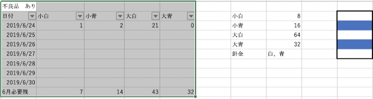
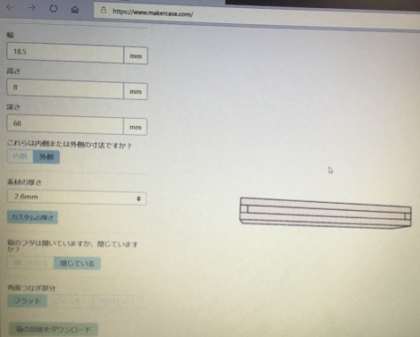
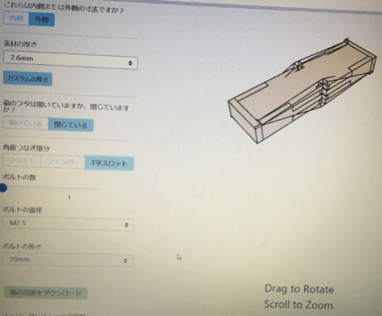
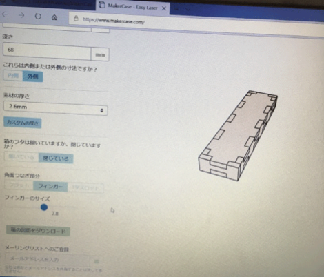
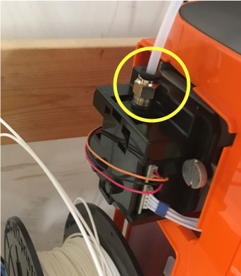

必要グラフを作った（リンク）＊累積グラフはもう少し時間をください

２色にしていきたいが念の為“白”を優先的に作っていきたい
先週はひたすらプリントしていました
今週からある程度数がまとまってきたので、試しにつけてみたり、残りの必要な具体的なピース数を把握していきたい
また暖簾の方も少しづつ着手していきたい
MakerCaseを使ったUSBケースでその失敗や調整に関しては後日専用のページを作って詳しく書き残す予定です
また最初は寸法を間違えてしまい、外寸と内寸を間違えたので作るときは要注意です
t字スロットという形がどうすればいいのか全く理解できなかったので知っている方がいらっしゃいましたら教えていただきたいです



これまで、二年生などで作ってきたものも含め少しづつ研究ワークショップのページに掲載していきたい
また、提案ですぐ作れるテンプレートがたくさんあるレシピのニーズがあったので作ってみたい
１５分で作れるスッテカーや名札。のような感じで30分、90分などいくつかのシリーズを作っていく予定
ジェネレイティブデザインについて興味深い記事を見つけましたHERE
”ものづくりは、何度も修正や変更の反復を繰り返しながら進められます。AI を活用したデザイン手法であるジェネレーティブ デザインは、自然界の進化の法則をなぞるようにしてデザインのアイデアを導き出します。ジェネレーティブ デザインにより多数生成される「予想外」のデザインに、デザイナーやエンジニアがどう向き合っていくかが、「AI 時代のデザイン」を考える上で重大なヒントとなるでしょう。”上記HPより
FUSIONの機能の１つとし出されたものらしく、興味を持ちました。
しかし学生版にはない機能で有料の方でのみ使用可能なものと判明したので機会があれば是非使ってみたいと感じました
・テンプレートはあると作った時の達成感を味わえるのがいい、無駄と言われない面白みのあるやつが欲しい
→そういうテンプレートを考えて作ってみます
・”名刺が作れます”をラボにいる時に外に貼ってみたらどうか
→名案ですね！歓迎されている雰囲気も出せるし、2回目から入りやすくなるのではないだろうか
・累積グラフは？
→授業終了後作成。次回の発表資料にて添付してあります
・T字スロットについて知ってる人なし
→気になるので、また使う機会があったら調べてみます
・ジェネレイティブデザインが使えるアカウント知ってるよ！
→試してみたいので、後日教えて下さい
１２０個が目標ですが、もし機械トラブルで足りなかったら、調整はできる計画なので今のところ順調です。
残りの作業は…針金の購入、傘の骨組みの大きさ調整、実際の組み立て（パーツにする）、動画撮影
今回３Dプリンターの故障により、ペースダウンしましたが、２つとも直し、現在４台稼働で行なっています。


夏休みに進めていく予定です
レシピ作り、HP作成を定期的に継続していきたい
また後期に向けての方針を狭めていく期間にしていきたい